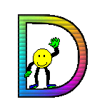

Teoria:
-javascript powstala w połowie lat 90
-JavaScript to język skryptowy, za pomocą którego tworzy się skrypty, czyli to co obsługuje inny program bądź strona internetowa
-js jest wykonywany po stronie użytkownika w środowisku przeglądarki internetowej
-dlaczego jest to bezpieczne narzędzie
-js to jezyk objektowy bo musi działać w określonym środowisku, najczęściej w przeglądarce internetowej
‹input type="button" name="przycisk" value="Nowa Strona" onclick="WinOpen(' ')"›
gdy chcesz wyświetlić instrukcję, która nie powinna się wykonywać a tylko wyświetlać masz dwie możliwości:
znak < możesz wyświetlić jako ‹
window.open("obraz.html","okienko","toolbar=no,directories=no,menubar=no,height=280,width=160,top=200,left=200");
toolbar=no ukrywa przyciski katalogów
directories=no, pokazuje lub ukrywa przyciski katalogów
menubar=no, pokazuje lub ukrywa menu przeglądarki
height=280, ustawia wysokość okna
width=160, ustawia szerokość okna
top=200, ustawia położenie okna względem góry ekranu
left=200 ustawia położenie okna względem lewej strony ekranu
